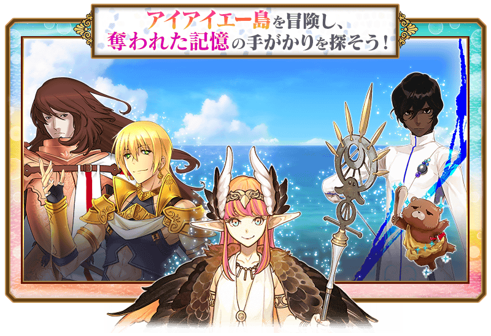

預定舉辦期間限定活動「艾尤的春風 ～魔女與愉快夥伴與嶄新冒險～」！
發生微小特異點的希臘艾尤島。在這個同時也是某位大魔女的故鄉所在之處，開始動搖少女心的冒險！
本活動中，活動關卡會在管理室(ターミナル)出現！
除了享受故事的主線關卡逐日開放以外，在第一節通過後會開放收集活動道具的自由關卡。
攻略活動關卡，觀看故事的結尾吧！
※本頁面皆為開發中圖片。會有與實際圖片相異的情況。 ※一部份的關卡為日後開放。
◆活動舉辦期間◆
2020年3月6日(五) 17:00(預定)～3月16日(一) 11:59
◆活動參加條件◆
滿足以下條件的御主才能參加
・通過「特異點F 炎上汙染都市 冬木」
◆有關從者真名的注意◆
在2018年12月31日(二) 23:00以後新配信的主線故事及期間限定活動、一部份關卡、宣傳活動及召喚中，會顯示隱藏真名的對象從者真名。
※2018年12月31日(一) 22:59前已經配信的主線故事、復刻活動、一部份關卡中不在此限。


本活動的期間中、所有男性從者在活動關卡中會得到自身的攻擊威力提升50%的加成！
強化對象從者，向活動挑戰吧！

◆有關從者的注意◆
※性別「男性」的從者之外，下述的從者也包含在活動加成的對象。
・★5(SSR)阿斯托爾福(Saber)
・★5(SSR)俄里翁
・★5(SSR)恩奇杜
・★5(SSR)伽摩
・★5(SSR)始皇帝
・★5(SSR)魔王信長(織田信長)
・★4(SR)夏爾・德翁
・★4(SR)阿斯托爾福(Rider)
※自3月4日(三) 17:00，在從者選擇畫面和從者強化畫面等，追加活動加成篩選器。由於是只顯示活動中活躍從者的便利功能，敬請活用。